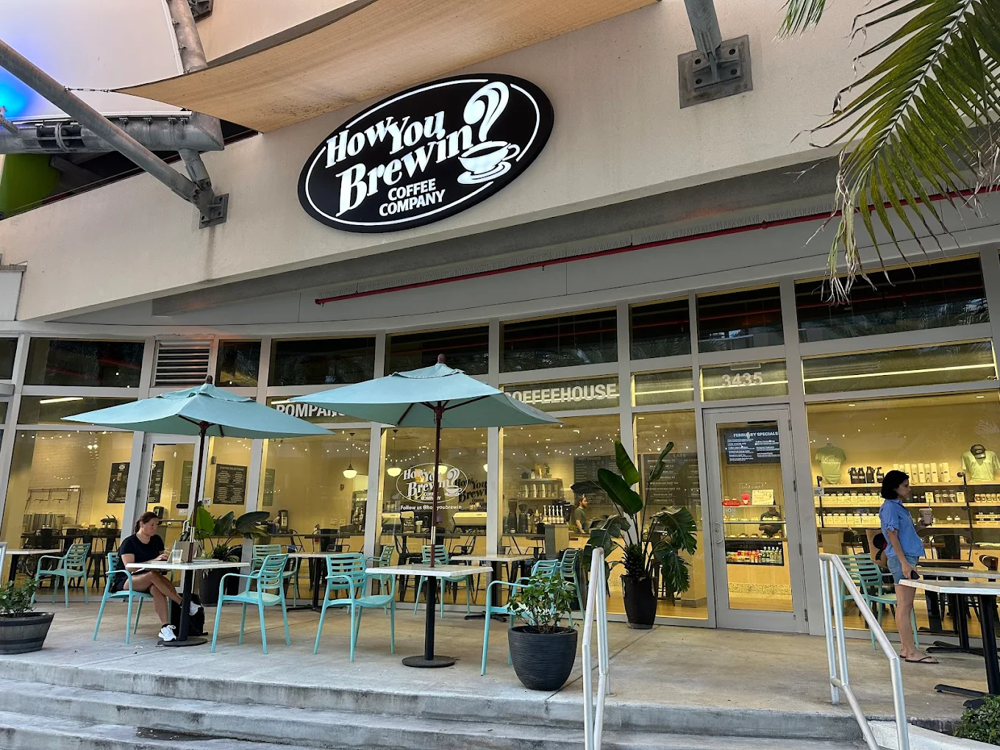

Lucky Fish
Lucky Fish Beach Bar & Grill in Dania Beach is a lively, open-air beachfront spot with laid-back tropical vibes and ocean views. They offer a casual menu with coastal favorites, burgers, tacos, and fun desserts like the Fried Oreos with Vanilla Sauce, which you enjoyed. The tiki-style bar serves up refreshing cocktails and has a popular Happy Hour on weekdays. Live music plays every weeknight from 6 to 9 p.m., creating a fun and relaxed atmosphere. It’s the perfect place to kick back, enjoy the breeze, and catch some good tunes by the water.

The Beach House
Beach House Pompano is one of my favorite spots right on the beach with a beautiful rooftop and ocean view. I ordered the By The Caesar salad, which came with wood-fire grilled romaine, rustic croutons, Parmesan, and a delicious house-made dressing. I added salmon, and it was perfectly grilled and full of flavor. The sun-dried tomato oil on top gave it a unique, savory touch that really stood out. The whole experience felt relaxing and upscale at the same time—perfect for a beach day dinner.

Oceanic
Oceanic at Pompano Beach offers a sleek, beachfront dining experience with a menu that emphasizes fresh seafood, creative starters, and thoughtfully executed grilled and land-based dishes. Appetizers include Calamari with smoked tomato aioli, Conch Chowder, Peruvian ceviche, and a local artisan bread basket to kick things off. From the garden, dishes like Cashew Crunch Chicken, Little Gem Caesar, and a Baby Iceberg Wedge salad bring fresh flavors and interesting textures. The seafood offerings shine with Cashew-Crusted Salmon, Seared Diver Scallops, and Seafood Pasta featuring the catch of the day. And if you prefer meat, menu highlights include Filet Mignon, New York Strip, Braised Beef Short Rib, or Churrasco Steak—plus a crisp Bacon Blue Burger for something more casual.

How You Brewin
How You Brewin Coffee Company is a cozy, welcoming café known for its laid-back vibe and high-quality brews on Long Beach Island. I ordered a handcrafted latte and loved how smooth and bold it was. They also offer smoothies, teas, and light bites like muffins, bagels, and paninis—perfect for a breakfast stop or midday pick-me-up. With comfy seating and a warm atmosphere, it's the kind of coffee shop that makes you want to linger, whether you’re catching up with friends or enjoying a quiet moment alone.
